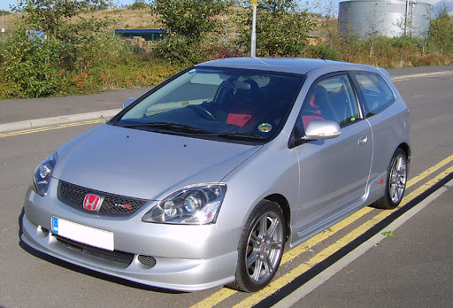
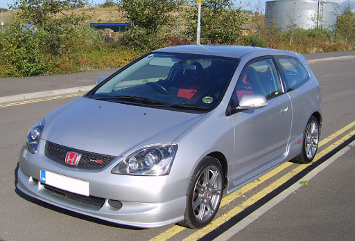
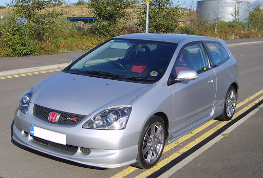

In 2001, Honda introduced the next generation of the Civic Type R(Codenamed Ep3) as a unique 3-door hatchback to the UK market, which was manufactured in Swindon, England.This was manufactured until 2006.This particular Civic Type R featured a 200 PS (147 kW; 197 hp) inline 4 cylinder 2.0-liter i-VTEC petrol engine.
The Ep3 was greatly recieved with most waxing lyricalabout the enigine box combination, it's not until you compare it to it's rivals at the time you realise how ahead of the game honda really were in this field.It seems to have aged well too .
People certainly loved it ,around 15653 ep3s were sold over its lifetime ,now there are estimated to be around 8000 left on uk roads courtesy of how many left While there still a heathy amount, this number is dropping significantly and prices are starting to rise. If youve always had your eye on one ,now is the time to buy.
Making 197hp (200ps) from the factory its the way the k20a2 delivers its power that makes it special. Normal car up until 5800rpm then bang Vtec until over 8000rpm.
Massive tuning potential for an N/A (Naturally Aspirated) motor. With simple bolt on modifacations you will see around 240-250hp once mapped to suit.
Ultra reliable as long as they are looked after .With only a few known issues .Can take serious abuse ,the reason why so many other car enthusiasts are converting their own fiesta st(150) or clio(182) to k20 power.
Great news for potential buyers is that these are euro 4 compliant . Making it a great usable daily drive.
